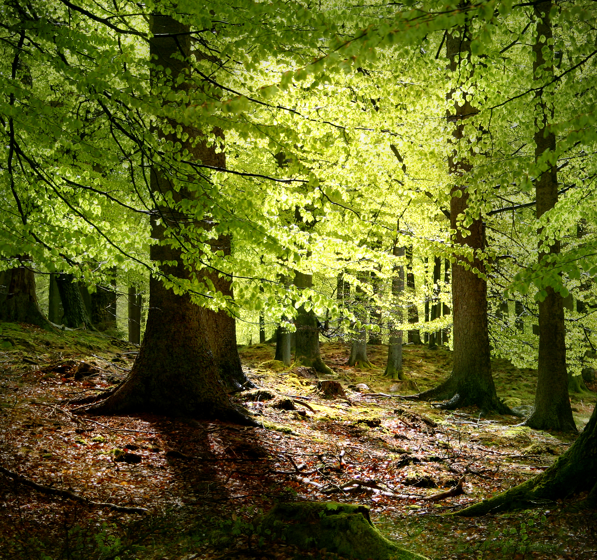

Historial tu huella de carbono
Revisa el historial de tu huella de carbono
Ver tu impacto actualBienvenidos a nuestro proyecto
Implementar formas variadas para la comunidad de reducir su impacto en el cambio climático.
Calcular Huella de Carbono Conocer la iniciativa
Una mesa de ayuda entre los puestos
ACME es una oficina ficticia de objetos extraviados en ferias itinerantes. Cuando el evento se traslada, las personas no saben a quién preguntar ni dónde quedó lo encontrado.
Es una herramienta oficial del Ministerio del Ambiente que permite a las organizaciones medir y gestionar sus emisiones de gases de efecto invernadero.
Es una iniciativa del Ministerio del Ambiente que trabaja con comunidades para proteger los bosques tropicales y contribuir a reducir la deforestación.
Nuestros Metodos
Revisa el historial de tu huella de carbono
Ver tu impacto actualAccede a la calculadora de la huella de carbono
Ver Calculadora